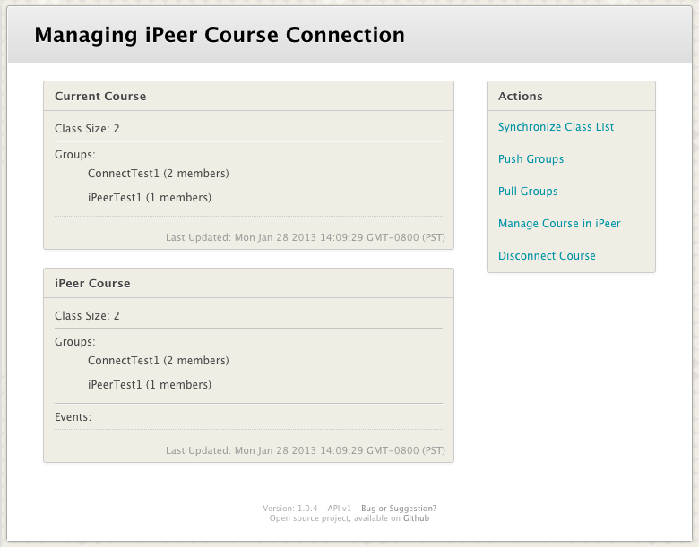
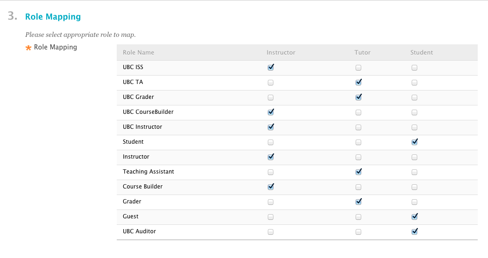
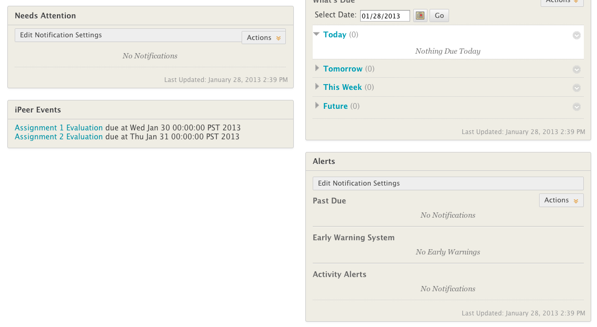

iPeer B2
iPeer Building Block for Blackboard Learn
iPeer Building Block for Blackboard Learn
This building block provides tight integration for iPeer to Blackboard Learn.
 Create Course: Allowing you to create the course within Blackboard Learn
Create Course: Allowing you to create the course within Blackboard Learn - Manage Course: Syncing class list, groups and grades
- Role Mapping: Defining role mappings between iPeer and Blackboard Learn
- Student Module: Allowing students to see the current events and jumping into iPeer without login again
Other Features:
Single Sign On
This feature allows instructor and student to login login to iPeer from Blackboard Learn directly, without typing in username and password again.
Grade Synchronization
This feature allows instructor to get the grade in iPeer back to Blackboard Learn Grade Center with one click.
System Requirements:
- iPeer 3.0 and above
- Blackboard Learn 9